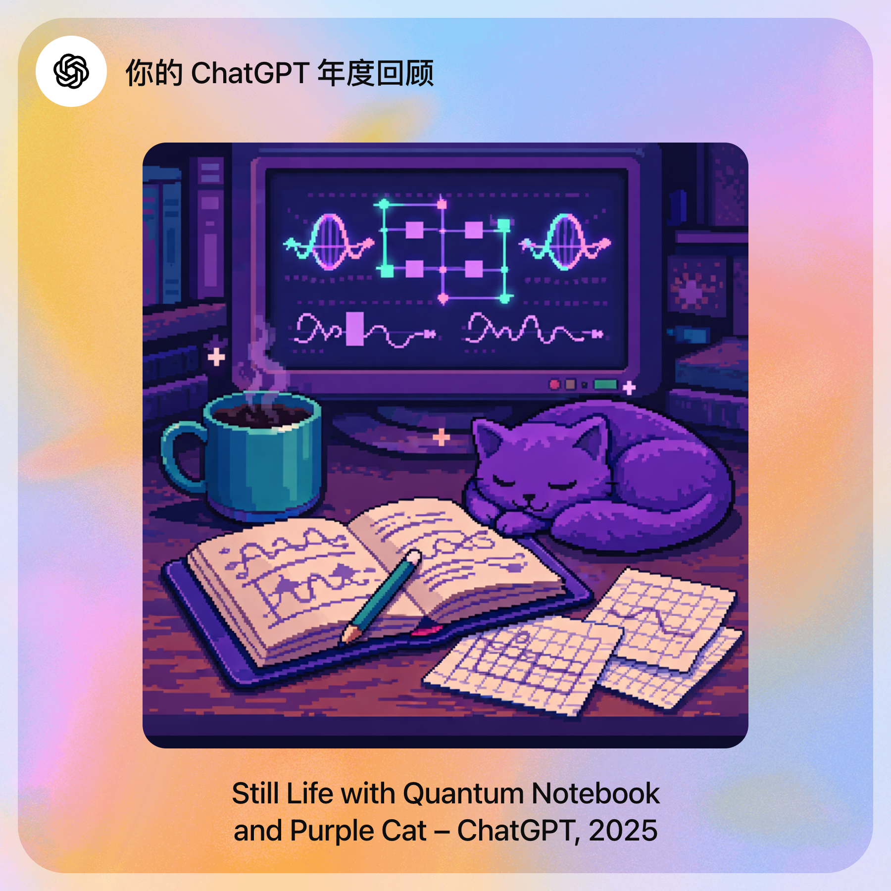

Banana889[2025]
2025年是一堆未终止的进程
11月6号，刚从所里听完每周的报告回环保园，那是北京秋冬季节常见的雾霾天，白茫茫一片，显得一切都不精神；缺乏光照，人也不太精神。我不想做事情，开了这个文档，想着随便写点东西吧。写点什么好呢？
今年想了好多事情，写下来的却乱七八糟，于是之前写的那些都被我作废。今天是12月31日，我有一阵觉得我不想写总结了，因为我觉得我写不好，晚上回宿舍又打开电脑重新开始写，总得留下点什么，更重要的是理一理头脑中乱七八糟的东西。
这一年分为好几个阶段，在雁栖湖的研一下半学期、两个月的极其漫长的”暑假“、回所后的日子。前几天在班车上听到了这首歌，看着窗外快速飞过的一切，那就像流动的时间；过去的记忆与想法在时间长河中都被蒙上了一层雾，又远又近，看不清楚，就像这首歌糊糊的音色。
所以我该写点什么好呢？
表达
虽然本来就是一个话很少的人，但是现在变得更加话少，总要斟酌纠结。我现在写这篇年终总结就写得很痛苦。
我有太多需要学习的东西了，例如如何组织一篇文章，如何把自己的观点输出得清晰有条理，甚至如何闲聊。这些对于有些人来说很容易的事情，对于我来说却非常困难。
我发现说话其实是一件很难的事情啊，只有很短的反应时间并且输出只能是线性的（即不能修改和撤回）也许是从小不喜欢说话导致这方面的脑子发展得不好，感觉说话的时候，语言表达就已经占用了我大量
CPU，很难再去想别的事情。那些临场反应能力很强的人在我看来都是天才=.=
但是其实我知道自己的问题之后并没有去积极改变，只是把语言系统当做一个黑盒，什么都没做就给自己打上了标签。其实这些都需要好好琢磨，而不是直接给自己判死刑。就像 GPT 给我的年终总结里面说的：
心情
我想起来看过的一个 meme 图，但是找不到了，大概是四宫格：
春天：抑郁（复苏地）；夏天：抑郁（热烈地）
秋天：抑郁（萧条地）；冬天：抑郁（抑郁地）
这大概是我这一年的状态，我发现自己的一些心理问题，一些奇怪的行为模式，然后去记录，去和它们激烈斗争，但是不幸地发现这些问题似乎因为被我重视而变得更加严重。
我的备忘录，日志，日记上面写了很多很压抑的文字。之前在小红书看到一篇帖子说，"热带没有哲学"，植物生长，万物自由，随时都可以播种、收获。而寒冬的北京的班车上塞满了哲学，因为晕车无法做其他事情，只能睡觉或者戴上耳机观察时间的流逝，或者想一些乱七八糟的东西，压抑和孤独的情绪就这么放肆流淌。
我不确定这种状态是否是病态的，但我在努力改变，像给代码debug一样de自己的bug，这个过程让我更加了解自己。
经验
这里简单列举一些学到的经验吧
- 为目标做尽可能详细的计划
- 用 Obsidian 建立知识数据库
- 整理笔记是很有必要的
- 不要过分反思自己
- 每天记录一条经过验证的经验（关于任何事情的都可以）
- 这个是我在一本书上看到的一条建议，执行起来很有趣
- 生活就是不断实验然后获取知识，这些知识通常被称为"经验"
- 对于未完成的工作设置一些容易开始的引子
- 这个是我玩星露谷发现的，这个游戏能够吸引人忘记时间地玩下去的主要原因就是每天早晨醒来都有很明确的事情要做（信件、成熟的庄稼、酿好的酒、节日、拜访的邻居），由于不能在一天中间存档，在做完这样明确的任务之后我就会不自觉地在游戏中过完这一天
问题
依然像之前一样留下几个问题给明年的自己，明年见~
- 如何去面对无尽的不确定性？
- 如何面对被浪费的时间？
- 你找到适合自己的作息了吗？
写在最后
这一年科研上虽然只做了一个题，但学到了很多东西，也想了很多东西。心态上可以说是实现了从"出世"到"入世"的转变，因为我意识到自己其实也向往世俗意义上的成功，只是因为害怕自己努力却得不到想要的结果从而装作不在意。
想起来我上高中的时候，妈妈总对我说女孩子学习不要太累，成绩差不多就好，类似的话对我起到的作用却是激将法，我害怕这样的预言成真。这个社会大部分人对于女孩们的期许总是"差不多就好"，而对于男孩的要求总是不能"连女孩也不如"，像这样看似温和的性别歧视还有很多很多。
女孩，你也可以有野心。:smiley:
最后的最后，
致谢
经常庆幸活在这样的时代，见证着人类对世界认知的急速发展。
想学任何东西都可以轻易搞到资源，并且有 ai 这样无所不知的耐心助手，有什么想法可以快速验证。
其实也很庆幸学了这样的专业， 这对我的认知和资料搜集能力都有极大的提升（相比与上大学以前）。
过去的所有选择都把我引领到了这地方，无比感恩。
我想起《星际穿越》 中的一句台词，大概是这样： “我们曾生活的那个年代，每一天都有新的东西产生”
我们现在生活的时代正是如此！
